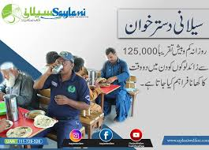

Introduction
Saylani Welfare International Trust is a Pakistani charity focusing primarily on feeding the homeless. It was established in May 1999 and is headquartered at Bahdurabad, Karachi, Pakistan. It was founded and headed by spiritual and religious scholar Maulana Bashir Farooq Qadri. [1][2] With an estimated monthly expenditure of Pakistani Rupees above 30 million, Saylani Trust, provides food twice a day to more than 30,000 poor people through its 100 centers (generally known as Dastar-Khawan), most of them are serving in Karachi. The organization distributed CNG rickshaws among the jobless citizens of Karachi in April, 2011 with the help of members of the Karachi business community.
Online Sadqa
Every day, more than 1,000 animals are sacrificed as Sadaqqah and Aqiqa across Pakistan and the meat is distributed among the poor. We also find people who are suffering from severe diseases such as T.B and Cancer.

Education
We are an organization that believes in lighting up the lives of underprivileged people across the world. We endeavor to provide the best quality services in areas including food, education, medical and social welfare free of cost to people living in the dark
.jpeg)
Medical
With over 60 different sectors, we feed thousands of hungry people each day. Our worldwide branches are operating under the guidance of a team of over 2,000 working professionals who help almost 125,000 people on a daily basis.
.jpg)
Gallery
.jpeg)
.jpeg)
Our Misson
Who is it that would loan Allah a goodly loan so He may multiply it for him many times over? ( Surat Baqara, Verse 245)
It should be noted that Allah, who is in need of no one and nothing, instills upon
his men to give Qarz-e-Hasana because it is in man’s nature to be frugal whilst spending
his wealth. Allah speaks about qarz because it is returned and Allah promises that He will
the goodly loan by 70 folds. Allah conveys his message to the Muslim ummah through
the Holy Prophet Muhammad prompting Muslims to spend their wealth in a certain way.

Contact Us
Head Office, A-25, Bahadurabad Chowrangi Karachi, Pakistan
UAN: 111-729-526 (+0092-213) 4130786-90
CELL: 92-311-1729526
USA NO +1(716)941 7792
UK NO (+44)115 970 6256
info@saylaniwelfare.com